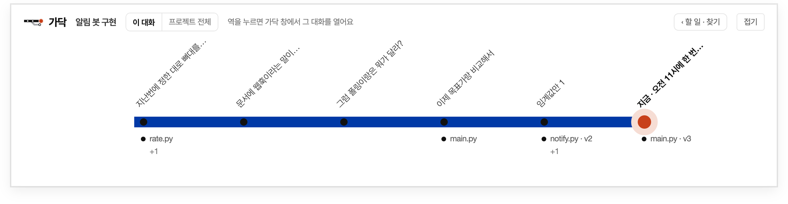

가닥은 Claude · ChatGPT 같은 AI와 나눈 긴 대화를 지하철 노선도로 정리해 주고, 놓친 일을 먼저 알려 주는 앱이에요. 대화는 쓰던 곳에서 그대로 하고, 가닥은 옆에서 흐름만 정리해요.
설치하기파일 하나 · 1분
처음 열기한 번만 허용 · 1분
AI 연결버튼 한 번 · 2분
쓰기켜 두면 알아서
내 컴퓨터에 맞는 파일
내 컴퓨터
받은 파일
안내
Mac · Apple 칩 (M1 이후 · macOS 12 이상)
가닥-0.1.0-arm64.dmg
2쪽
Mac · Intel (macOS 13 이상)
가닥-0.1.0-x86_64.dmg
2쪽
Windows 10 · 11 (64비트)
가닥-0.1.0-windows-x64-설치.exe 설치하지 않고 쓰려면 가닥-0.1.0-windows-x64.zip
3쪽
어느 Mac인지는 화면 왼쪽 위 사과 메뉴 → 이 Mac에 관하여에 나와요. ‘칩 Apple M…’이면 Apple 칩, ‘프로세서 … Intel …’이면 Intel이에요.
정리할 AI는 하나만 있으면 돼요. Claude 구독(Pro · Max) · ChatGPT 구독(Plus · Pro) · LLM API 키(Anthropic · OpenAI · Gemini) 가운데 하나. 없어도 가닥은 켜져요. 그때는 대화를 읽어 보여 주기만 하고, 역 이름이 질문 첫머리 그대로예요.
차례
1Mac에 설치하기 · 처음 열기2쪽
2Windows에 설치하기 · 처음 열기3쪽
3AI 연결 — 버튼 한 번4쪽
4대화 읽어 오기5쪽
5가닥 창 보는 법6쪽
6노선도 읽기 · 전체 지도7쪽
7떠 있는 버튼 (Mac)8쪽
8바꿀 수 있는 것 · 막힐 때 · 지우기9쪽
가닥 창 안의 도움말에는 화면 읽는 법과 낱말 풀이가 주제별로 들어 있어요. 이 안내는 설치와 처음 설정까지를 다뤄요. · 가닥 0.1.0 · 2026년 10월
1Mac에 설치하기Mac
받은 dmg 파일을 두 번 눌러요. 창이 하나 열려요. Apple 칩 Mac은 arm64, Intel Mac은 x86_64 파일이에요.
가닥을 오른쪽의 ‘응용 프로그램’ 폴더로 끌어다 놓아요.
창을 닫아요. 설치는 이것으로 끝이에요.
가닥
가닥
→
응용 프로그램
꼭 응용 프로그램 폴더로 옮긴 뒤에 켜요. dmg 창 안에서 바로 켜면 Cursor 연결 같은 일부 기능이 안 돼요. 창 안의 ‘처음 여는 법.txt’와 이 안내 PDF는 읽기용이라 옮기지 않아도 돼요.
처음 열기 — Mac이 한 번 막아요
가닥은 학교 과제로 만든 앱이라 Apple의 유료 개발자 서명이 없어요. 그래서 처음 한 번만 직접 허용해 줘야 해요.
응용 프로그램 폴더(또는 Launchpad)에서 가닥을 열어요.
열 수 없다는 창이 떠요. 완료를 눌러요. ‘휴지통으로 이동’은 누르지 마세요.
시스템 설정 → 개인정보 보호 및 보안을 열고 아래로 내려요.
‘가닥이(가) … 차단되었습니다’ 옆의 그래도 열기를 눌러요.
한 번 더 묻는 창에서 그래도 열기를 누르고, Mac 암호나 Touch ID로 확인해요.
‘가닥’을(를) 열 수 없습니다
Apple은 ‘가닥’에 Mac을 손상시키거나 개인정보를 침해할 수 있는 악성 코드가 없음을 확인할 수 없습니다.
휴지통으로 이동완료
시스템 설정
개인정보 보호 및 보안 › 보안
‘가닥’이(가) 사용자의 Mac을 보호하기 위해 차단되었습니다.그래도 열기
본떠 그린 그림이에요. 글은 macOS 버전에 따라 조금 달라요.
한 번 열고 나면 다음부터는 그냥 열려요. macOS 14 이하에서는 가닥을 오른쪽 클릭 → 열기 → 열기로도 돼요. 켠 뒤에는 창 맨 위가 검은 띠예요. 띠의 빈 곳을 끌면 창이 움직여요.
2Windows에 설치하기Windows
Windows 10 · 11이면 돼요. 가닥에 필요한 것이 설치 파일 하나에 다 들어 있어서 따로 깔 것이 없어요.
받은 ‘가닥-0.1.0-windows-x64-설치.exe’를 두 번 눌러요.
“Windows의 PC 보호”라는 파란 창이 뜨면추가 정보를 누르고, 이어서 나오는 실행을 눌러요. 가닥은 학교 과제로 만든 앱이라 유료 서명이 없어요. 그래서 처음 한 번 이 확인이 필요해요.
설치 창에서 설치를 눌러요. 내 계정에만 깔려서 관리자 암호를 묻지 않아요.
‘가닥 켜기’에 표시가 있는 채로 마침을 눌러요. 가닥 창이 떠요. 다음부터는 시작 메뉴나 바탕 화면의 가닥으로 켜요.
2파란 창에서 ‘추가 정보’
Windows의 PC 보호
Microsoft Defender SmartScreen에서 인식할 수 없는 앱의 시작을 차단했습니다. 이 앱을 실행하면 PC가 위험에 노출될 수 있습니다.
추가 정보
실행 안 함
2이어서 ‘실행’
Windows의 PC 보호
앱: 가닥-0.1.0-windows-x64-설치.exe 게시자: 알 수 없는 게시자
실행실행 안 함
4설치가 끝나면 ‘마침’
가닥 설치— ☐ ✕
가닥 설치 완료
가닥의 설치가 완료되었습니다.
✓가닥 켜기
처음 여는 법 보기
< 뒤로마침취소
본떠 그린 그림이에요. 실제 모습은 Windows 판에 따라 조금 달라요.
Windows에서는 이렇게 달라요
가닥 창
Edge(없으면 Chrome)의 주소창 없는 창으로 따로 떠요. 창을 닫으면 가닥도 꺼져요. 다시 켜려면 시작 메뉴의 가닥.
AI 연결
Claude Code · Codex를 가닥이 대신 받아 주지 못해요. 이 PC에 이미 깔려 있고 로그인돼 있으면 그대로 골라 쓰고, 없으면 LLM API 키를 넣어요(3번). 키는 이 PC의 Windows 자격 증명 관리자에만 둬요.
아직 없는 것
떠 있는 버튼(7번) · Cursor 연결 · 가닥이 알아서 보내기 · Claude 사용 한도 게이지. 나머지는 Mac과 같아요.
설치하지 않고 쓰기
‘가닥-0.1.0-windows-x64.zip’을 풀고, 그 안의 가닥 켜기.cmd를 눌러요.
지우기
설정 → 앱 → 설치된 앱 → 가닥 → 제거. 읽어 둔 대화까지 지우려면 C:\Users\내 이름\.gadak 폴더도 지워요.
Windows 판은 0.1.0에서 처음 나왔어요. 아직 여러 PC에서 써 보지 못했어요. 켜지지 않거나 이상하면 C:\Users\내 이름\.gadak\gadak.log 파일을 만든 사람에게 보내 주세요.
3AI 연결 — 버튼 한 번
가닥이 대화를 정리할 때 쓸 AI를 연결해요. 가닥이 켜지면 AI 연결 창이 저절로 떠요. 셋 가운데 가진 것 하나만 하면 돼요.
처음 켰을 때. 닫았다면 왼쪽 아래 AI 연결 버튼으로 다시 열어요.
가진 것
할 일
Claude 구독 Pro · Max
‘Claude 구독’ 칸의 연결하기를 눌러요.
ChatGPT 구독 Plus · Pro
‘ChatGPT 구독’ 칸의 연결하기를 눌러요.
LLM API 키 Anthropic · OpenAI · Gemini
가진 키를 ‘LLM API 키’ 칸에 붙여 넣고 저장을 눌러요. 어느 회사 키인지는 가닥이 알아봐요.
‘연결하기’를 누르면 Mac
필요한 프로그램을 가닥이 받아요. Claude는 ‘Claude Code’, ChatGPT는 ‘Codex’예요. 각 회사의 공식 배포 파일이고 200MB쯤이라 1분쯤 걸려요. 이미 있으면 건너뛰어요.
브라우저가 열려요. 평소 쓰는 계정으로 로그인하고 허용을 눌러요. 그동안 가닥에는 ‘브라우저에서 로그인을 마쳐 주세요’라고 떠 있어요.
가닥 창으로 돌아오면 ‘연결됨’으로 바뀌어 있어요. 이제 그 AI로 정리해요.
Windows 가닥이 프로그램을 대신 받아 주지 못해요. Claude Code나 Codex를 직접 깔아 로그인해 두면 가닥이 찾아 쓰고, 없으면 LLM API 키로 연결해요.
연결된 뒤. 쓰고 있는 AI는 테두리가 진해요.
알아 둘 것
· 구독으로 연결하면 추가 요금이 없어요. 대신 평소 쓰는 Claude · ChatGPT와 사용 한도를 같이 써요. 얼마나 썼는지는 가닥 창 오른쪽 아래에 보여요(5번).
· API 키는 쓴 만큼 요금이 나가요. 키는 이 Mac의 키체인(Windows는 자격 증명 관리자)에만 두고, 화면에는 끝 네 글자만 보여요.
· Google AI Studio의 Gemini 무료 키도 돼요. 요금이 없는 대신 한도가 낮고, 보낸 글이 Google의 제품 개선에 쓰일 수 있어요.
· 가닥은 내 암호를 보지 않아요. 로그인은 브라우저에서 그 회사에 직접 해요.
· 여러 개를 연결했으면 같은 창의 이걸로 정리하기로 바꿔요.
· 연결하지 않고 쓰려면 AI 없이 쓰기. 대화를 읽어 보여 주기만 해요.
· 로그인이 5분 안에 끝나지 않으면 저절로 멈춰요. 연결하기를 다시 누르면 돼요.
4대화 읽어 오기
가닥은 이 컴퓨터에서 한 AI 대화를 찾아 읽어요. 어디에서 쓰느냐에 따라 할 일이 달라요. 지금 무엇을 읽고 있는지는 왼쪽 아래 찾은 곳에 나와요.
AI를 쓰는 곳
할 일
Claude Code · Codex
없어요. 켜면 알아서 읽고, 하는 중인 대화도 따라와요.
Cursor Mac
찾은 곳 → 연결을 한 번 눌러요. 그 뒤의 대화부터 읽어요.
Claude · ChatGPT 웹 (크롬)
크롬에 가닥 확장을 한 번 넣어요. 아래 순서대로요.
지난 대화 한꺼번에
각 서비스의 설정 → 데이터 내보내기로 받은 파일을 찾은 곳 → 파일 고르기로 넣어요. AI가 연결돼 있으면 가닥이 프로젝트별로 묶어요.
크롬 확장 넣기 (한 번 · 2분)
가닥 창 왼쪽 아래 찾은 곳에서 폴더 경로 복사를 눌러요.
크롬 주소창에 chrome://extensions를 넣고, 오른쪽 위 개발자 모드를 켜요.
압축해제된 확장 프로그램을 로드합니다를 눌러요. 폴더 고르는 창에서 ⌘ ⇧ G를 누르고 붙여 넣은 뒤 열어요. Windows폴더 고르는 창의 주소 칸에 붙여 넣어요.
열려 있던 Claude · ChatGPT 탭은 한 번 새로고침해요.
확장은 크롬에서 연 대화를 이 컴퓨터의 가닥으로만 보내요. 시크릿 창과 임시 채팅은 읽지 않아요. 크롬 웹 스토어에 올린 확장이 아니라서 개발자 모드가 필요해요.
자동 실행 연결Mac ‘찾은 곳’의 Claude Code 칸에 있는 버튼이에요. 누르면 Claude Code 설정에 가닥을 더해서, 내가 켜 둔 두 가지(요청 외 변경 되돌리기 · 이어 가기 요약)를 가닥이 직접 보낼 수 있게 돼요. 누르지 않아도 읽기는 그대로 돼요.
찾은 곳. 읽고 있는 곳은 ‘알아서 읽는 중’이나 ‘연결됨’으로 보여요.
5가닥 창 보는 법
123456789
지어낸 예시 대화예요. 가닥은 대답하지 않아서 입력창이 없어요.
1대화 목록. 프로젝트별로 묶여 있어요. 위의 칸에서 찾고, 필요 없는 대화는 마우스를 올려 ×로 빼요. ‹를 누르면 접혀요.
2노선도. 대화 한 개가 노선 한 줄이에요. 점 하나가 질문 하나(역)이고, 누르면 그 자리로 가요. Esc로 접고 펴요.
3대화 글. 읽기만 해요. 대화는 쓰던 곳에서 그대로 해요.
4목록. 할 일 · 정한 것 · 산출물 · 앞길. 할 일의 버튼을 누르면 AI에게 보낼 글이 복사돼요. 쓸모없는 할 일은 ×로 지워요.
5한마디. 새 할 일이 생기면 뜨는 카드예요. 바로 하거나 ‘나중에’로 미뤄요.
6상태와 버튼. 가닥이 지금 무엇을 하는지 한 줄로 나와요. 그 아래에 AI 연결 · 찾은 곳 · 판단 기록 · 도움말 · 끄기가 있어요.
7전체 지도. 모든 프로젝트와 대화를 한 장에 그려요(6번).
8낮 · 밤. 밝은 화면과 어두운 화면을 바꿔요. Mac 앱에는 그 왼쪽에 떠 있는 버튼을 켜고 끄는 가닥 토글도 있어요.
9사용 한도. 구독으로 연결했을 때, 5시간 · 이번 주 한도를 얼마나 썼는지 보여요. 읽을 수 있을 때만 나와요.
목록의 네 칸
할 일
가닥이 찾은 놓친 일(빠진 요청 · 요청 외 변경 · 끝나지 않은 곁길)과 제안(이어 가기 · 반복 질문 · 주제 전환 · 다음 할 일).
정한 것
지금까지 정한 것을 최근 순서로. 누르면 정한 자리로 가요.
산출물
대화에서 나온 파일. 여러 번 고친 파일은 판(v1 · v2)으로 묶여요.
앞길
앞길 보기를 누르면 가닥이 이 대화가 갈 수 있는 길을 셋까지 찾아 줘요. 30초에서 2분쯤 걸리고, AI 사용 한도를 조금 써요.
6노선도 읽기 · 전체 지도
대화 한 개가 노선 한 줄이에요. 왼쪽이 처음, 오른쪽이 지금이에요. 역 이름은 가닥이 그 질문을 줄여 붙인 것이에요.
본선
프로젝트 색의 굵은 선. 전체 지도에서도 같은 색이에요.
역
작은 검은 점. 한 번 묻고 한 번 답한 것. 누르면 그 자리로 가요.
정함
큰 검은 점과 굵은 역 이름. 그 자리에서 무언가를 정했어요.
지금
빨간 점과 둘레의 빛. 대화가 와 있는 자리예요.
곁길
아래로 내려가는 회색 선. 하던 이야기에서 잠깐 벗어난 질문이에요.
할 일
역 아래의 빨간 고리는 아직 안 한 일, 회색 고리는 끝낸 일이에요. 올리면 내용이 보여요.
산출물
작은 점과 파일 이름. 그 자리에서 파일이 나오거나 바뀌었어요.
구간
노선 위의 이름표. 이야기의 단계예요. 지난 구간은 눈금으로 접히고, 이름표를 누르면 펴져요.
환승하기
노선 끝의 검은 화살표. 이 대화의 요약을 복사해요. 새 대화 첫머리에 붙여 넣어요.
노선도 카드의 이 대화 · 프로젝트 전체로 한 대화만 볼지, 같은 프로젝트의 대화를 이어 볼지 골라요. 나머지 표시와 낱말은 가닥 창의 도움말 → ‘노선도 읽기’ · ‘낱말 풀이’에 있어요.
전체 지도 — 모든 대화를 한 장에
맨 위 검은 띠의 전체 지도를 누르면 떠요. 지어낸 예시예요.
읽는 법
줄 하나가 프로젝트, 굵은 토막 하나가 대화예요. 날짜가 왼쪽에서 오른쪽으로 흘러요. 세로로 이은 검은 선은 한 대화가 다른 대화로 이어진 자리(환승)예요.
보는 기간
최근 7 · 15 · 30일 가운데 골라요. 오른쪽 아래의 − · 전체 · +로 키우고 줄여요.
한 줄 노선도
노선을 누르면 그 대화의 노선도가 한 줄로 펴져요.
포스터로 보기
같은 지도를 지하철 노선 포스터처럼 그려요. 전체 지도는 Esc로 닫아요.
7떠 있는 버튼 — 다른 앱을 쓰면서 보기Mac
가닥을 켜면 화면 가장자리에 가닥 버튼이 반쯤 걸쳐 있어요. 다른 앱을 쓰는 동안에도 보여서, 가닥 창으로 가지 않고 노선도를 볼 수 있어요. Windows에는 아직 없어요.
평소마우스를 올리면
가닥 (가운데)
노선도 창을 켜고 꺼요. 끌면 다른 가장자리로 옮겨져요.
노선도
지금 쓰는 대화의 노선도를 화면 위쪽에 띄워요.
할 일 · 정함 · 산출물
그 칸을 연 목록 창을 따로 띄워요.
찾기 · 창
가닥 창을 열어요. ‘찾기’는 대화 찾기 칸으로 바로 가요.
빨간 수
지금 대화에 열려 있는 할 일 수예요.
떠 있는 창은 Esc로 닫아요. 버튼이 떠 있는 동안에는 가닥 창을 닫아도 가닥이 꺼지지 않아요. 끄려면 ⌘ Q.

노선도 창. 화면 위쪽에 뜨고, 역을 누르면 가닥 창에서 그 자리가 열려요.
숨기기 · 다시 켜기. 가닥 버튼을 오른쪽 클릭 → 버튼 숨기기. 다시 켜는 길은 넷이에요: 가닥 창 맨 위 오른쪽의 가닥 토글 스위치, ⇧ ⌘ B, 메뉴 보기 → 떠 있는 버튼, Dock의 가닥 아이콘 오른쪽 클릭 → 떠 있는 버튼 보이기.
버튼을 내 마음대로 — 버튼 편집
가닥 버튼을 오른쪽 클릭 → 버튼 편집을 누르면 작은 창이 떠요. 바꾸면 바로 저장되고, 몇 초 안에 버튼에 반영돼요.
빼기
안 쓰는 버튼의 빼기를 눌러요.
더하기
아래의 + 앞길 · + 도움말처럼 점선으로 된 것을 눌러요. 여섯 개까지 둬요.
차례 바꾸기
↑↓로 옮겨요.
프로젝트 버튼
+ 프로젝트 이름을 누르면 그 프로젝트의 버튼이 생겨요. 누르면 가닥 창을 열지 않고 그 프로젝트의 노선도가 떠요. 버튼에 쓸 이름은 네 글자까지 고쳐요.
처음 모양으로
여섯 개(노선도 · 할 일 · 정함 · 산출물 · 찾기 · 창)로 되돌려요.
프로젝트 버튼은 그 프로젝트의 노선 색 테두리예요.바꾼 모습의 예
8바꿀 수 있는 것 한눈에
무엇
어디서
처음 값
정리에 쓸 AI
왼쪽 아래 AI 연결
연결된 것 가운데 가닥이 알아서
대화를 읽는 곳
왼쪽 아래 찾은 곳 (Cursor 연결 · 크롬 확장 · 파일 넣기)
Claude Code · Codex는 알아서
밝은 · 어두운 화면
맨 위 검은 띠 오른쪽의 낮 · 밤 스위치
컴퓨터의 화면 모드를 따라가요
전체 지도의 기간
전체 지도 위쪽의 최근 7 · 15 · 30일
30일
앞길 저절로 살피기
오른쪽 ‘할 일’ 칸 아래. 켜면 AI 사용 한도를 더 써요
꺼짐 (‘앞길 보기’를 누를 때만)
가닥이 알아서 보내기 Mac
오른쪽 ‘할 일’ 칸 아래. 요청 외 변경 되돌리기 · 이어 가기 요약 두 가지
꺼짐
떠 있는 버튼 Mac
자리는 끌어서, 구성은 오른쪽 클릭 → 버튼 편집, 숨기기는 가닥 토글
왼쪽 가장자리 · 여섯 개 · 보임
목록에서 대화 빼기
대화에 마우스를 올리고 ×. 목록 맨 아래 ‘뺀 대화’에서 되돌려요
—
할 일 지우기
할 일 오른쪽의 ×. 노선도의 고리와 알림 수에서도 빠져요
—
막힐 때
처음에 안 열려요
Mac은 1번의 ‘그래도 열기’를 했는지 봐요. 가닥이 응용 프로그램 폴더에 있어야 해요. Windows는 2번의 ‘추가 정보 → 실행’.
역 이름이 질문 첫머리 그대로예요
AI가 연결되지 않았어요. 왼쪽 아래 AI 연결에서 하나를 연결해요.
‘연결하기’가 끝나지 않아요
브라우저에서 로그인을 마쳤는지 봐요. 5분이 지나면 저절로 멈춰요. 다시 누르면 돼요.
빨간 글씨로 멈췄다고 나와요
AI 사용 한도에 걸렸거나 로그인이 풀렸어요. 한도가 풀린 뒤 정리 다시를 눌러요.
대화가 하나도 안 보여요
찾은 곳을 봐요. 이 컴퓨터에서 AI를 쓴 적이 없으면 읽을 기록이 없어요.
떠 있는 버튼이 안 보여요 Mac
숨겨 둔 거예요. 가닥 창 맨 위 오른쪽의 가닥 토글을 켜요. 켰는데도 없으면 화면의 네 가장자리를 둘러봐요.
가닥을 눌러도 창이 안 떠요 Windows
C:\Users\내 이름\.gadak\gadak.log에 까닭이 적혀 있어요. 설치가 “가닥이 켜져 있어요”라며 멈추면 가닥 창을 닫고 다시 해요.
내 대화는 어디로 가나요 대화 글은 이 컴퓨터에만 저장돼요. 정리할 때만 그 대화의 일부가 내가 연결한 AI(내 계정)로 가요. 가닥을 만든 팀의 서버로는 대화 글이 가지 않아요.
지우려면 Mac: 응용 프로그램 폴더의 가닥을 휴지통에 넣어요. 읽어 둔 대화까지 지우려면 Finder에서 ⌘ ⇧ G를 누르고 ~/.gadak 폴더도 지워요. Windows: 설정 → 앱 → 설치된 앱에서 가닥을 제거하고, C:\Users\내 이름\.gadak 폴더도 지워요.